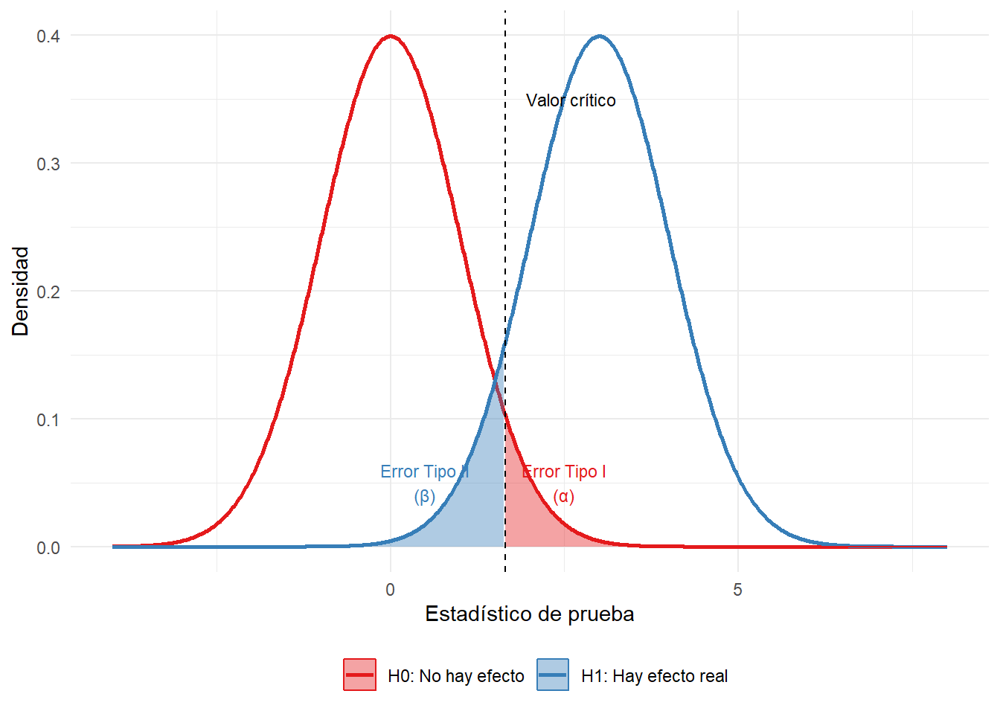
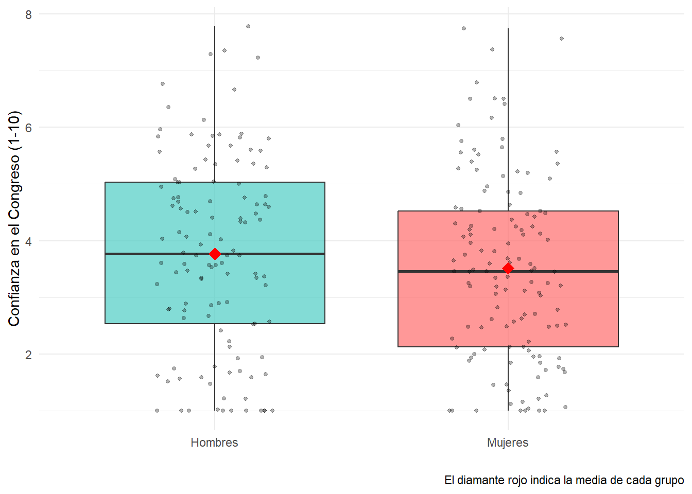
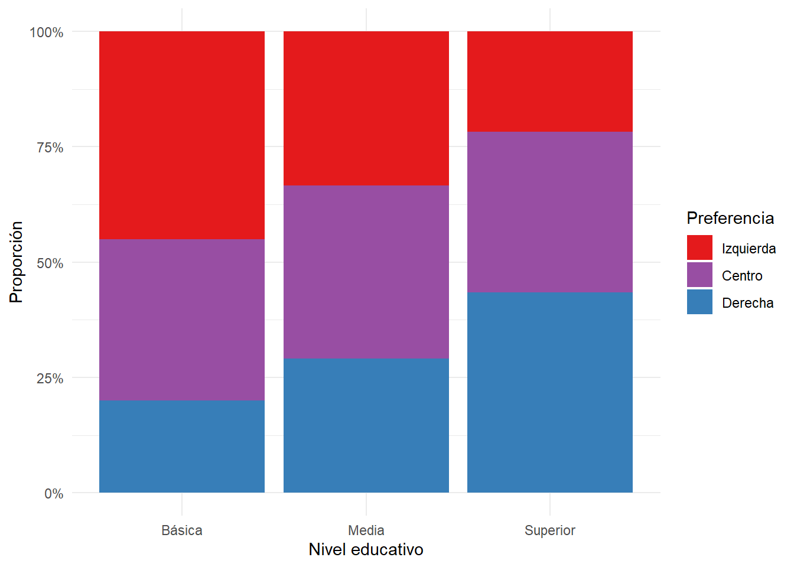

Comprender la lógica de las pruebas de hipótesis estadísticas
Formular correctamente hipótesis nula (\(H_0\)) y alternativa (\(H_1\))
Interpretar valores p y niveles de significancia
Distinguir entre significancia estadística y sustantiva
Reconocer y evitar errores tipo I y tipo II
Realizar pruebas de hipótesis para medias y proporciones
Entender las limitaciones y mal usos comunes de las pruebas de hipótesis
9.1 Lógica de pruebas de hipótesis
Las pruebas de hipótesis responden a una pregunta fundamental en investigación: ¿Este patrón que observo en mis datos es real, o podría ser producto del azar? Consideremos un caso concreto: en una encuesta antes de una campaña publicitaria, 42% de 800 encuestados apoyaba al Candidato A. Después de la campaña, en otra muestra de 800 personas, 47% lo apoya. La pregunta relevante es: ¿la campaña fue efectiva, o esta diferencia de 5 puntos porcentuales podría deberse simplemente a error muestral?
9.1.0.1 La lógica de prueba por contradicción
Las pruebas de hipótesis usan un argumento de reducción al absurdo:
Asumimos que NO hay efecto (hipótesis nula: \(H_0\))
Preguntamos: ¿Qué tan probable es observar nuestros datos si \(H_0\) fuera cierta?
Si esa probabilidad es muy baja, rechazamos\(H_0\) como implausible
Si la probabilidad no es tan baja, no rechazamos\(H_0\) (no tenemos evidencia suficiente contra ella)
Es crucial entender la asimetría fundamental de este razonamiento: nunca “aceptamos” o “probamos” \(H_0\). Solo podemos rechazar\(H_0\) (cuando hay evidencia contra ella) o no rechazar\(H_0\) (cuando no hay evidencia suficiente contra ella). Esto es análogo a un juicio judicial: no “probamos inocencia”, solo establecemos que “no hay evidencia suficiente de culpabilidad”.
9.1.0.2 Hipótesis nula y alternativa
9.1.0.3 Formulación de hipótesis
Hipótesis nula (\(H_0\)): Afirmación de “no efecto” o “no diferencia”. Es lo que asumimos como cierto inicialmente.
Hipótesis alternativa (\(H_1\)): Lo que esperamos encontrar si rechazamos \(H_0\). Puede ser: - Bilateral (dos colas): \(H_1: \mu \neq \mu_0\) (hay diferencia, en cualquier dirección) - Unilateral (una cola): \(H_1: \mu > \mu_0\) o \(H_1: \mu < \mu_0\) (dirección específica)
Ejemplos en ciencias sociales:
Pregunta
\(H_0\)
\(H_1\)
Tipo
¿Política redujo desempleo?
\(\mu = 8\%\)
\(\mu < 8\%\)
Unilateral
¿Participación difiere por género?
\(p_H = p_M\)
\(p_H \neq p_M\)
Bilateral
¿Ingreso regional ≠ nacional?
\(\mu = 550\)
\(\mu \neq 550\)
Bilateral
9.2 Valores p y errores
9.2.0.1 ¿Qué es un valor p?
El valor p (p-value) es la probabilidad de observar datos tan extremos como los nuestros (o más), asumiendo que \(H_0\) es cierta.
\[\text{valor } p = P(\text{datos tan extremos} \mid H_0 \text{ es cierta})\]
La interpretación correcta del valor p es fundamental para evitar errores comunes.1 Cuando observamos \(p = 0.03\), debemos interpretar: “Si no hubiera efecto real, veríamos resultados tan extremos solo 3% de las veces.”
1 Error común: “p = 0.03 significa 3% de probabilidad de que \(H_0\) sea cierta”. Falso. El valor p es \(P(\text{datos} | H_0)\), no \(P(H_0 | \text{datos})\). La hipótesis nula no es una variable aleatoria.
Un valor \(p = 0.001\) indica: “Si \(H_0\) fuera cierta, estos datos serían extremadamente raros (1 en 1000).” Por el contrario, \(p = 0.45\) significa: “Estos datos son muy compatibles con \(H_0\); no hay evidencia contra ella.” El valor p NO representa la probabilidad de que \(H_0\) sea cierta.
9.2.0.2 Nivel de significancia (\(\alpha\))
El nivel de significancia\(\alpha\) es el umbral que elegimos antes de analizar los datos para decidir cuándo rechazar \(H_0\). Convencionalmente se usa \(\alpha = 0.05\), pero esta elección es arbitraria.2
2 ¿Por qué 0.05? R.A. Fisher lo propuso como “conveniente” en los años 1920. No hay nada mágico en este número. En física de partículas usan \(\alpha = 0.0000003\) (5 sigmas). En estudios exploratorios, algunos usan \(\alpha = 0.10\). La elección debería depender del costo relativo de los errores tipo I y II.
La regla de decisión es:
Si \(p < \alpha\): Rechazamos \(H_0\) (resultado “estadísticamente significativo”)
Si \(p \geq \alpha\): No rechazamos \(H_0\) (no hay evidencia suficiente)
AdvertenciaCuidado con el término “significativo”
“Estadísticamente significativo” NO significa “importante” o “relevante”. Solo significa que el resultado es improbable bajo \(H_0\). Un efecto puede ser estadísticamente significativo pero prácticamente irrelevante (especialmente con muestras grandes), o puede ser sustantivamente importante pero no alcanzar significancia estadística (con muestras pequeñas).
9.2.0.3 Errores tipo I y tipo II
En pruebas de hipótesis, existen dos tipos de error posibles:
\(H_0\) es verdadera
\(H_0\) es falsa
Rechazar \(H_0\)
Error Tipo I (\(\alpha\))
Decisión correcta (Poder)
No rechazar \(H_0\)
Decisión correcta
Error Tipo II (\(\beta\))
Error Tipo I (falso positivo): Rechazar \(H_0\) cuando es cierta. Es como condenar a un inocente. La probabilidad de cometerlo es \(\alpha\), que nosotros controlamos al elegir el nivel de significancia.
Error Tipo II (falso negativo): No rechazar \(H_0\) cuando es falsa. Es como absolver a un culpable. La probabilidad de cometerlo es \(\beta\), que depende del tamaño del efecto real y del tamaño muestral.
Poder estadístico: \(1 - \beta\) es la probabilidad de detectar un efecto real cuando existe. Un estudio con poder de 0.80 detectará el efecto en 80% de las réplicas.
Código
library(ggplot2)# Crear datos para dos distribucionesx <-seq(-4, 8, length.out =1000)h0 <-dnorm(x, mean =0, sd =1) # Distribución bajo H0h1 <-dnorm(x, mean =3, sd =1) # Distribución bajo H1 (efecto real)datos <-data.frame(x =rep(x, 2),densidad =c(h0, h1),hipotesis =rep(c("H0: No hay efecto", "H1: Hay efecto real"), each =1000))# Valor crítico para alpha = 0.05 (una cola)valor_critico <-qnorm(0.95, mean =0, sd =1)ggplot(datos, aes(x = x, y = densidad, color = hipotesis, fill = hipotesis)) +geom_line(linewidth =1) +geom_area(data =subset(datos, hipotesis =="H0: No hay efecto"& x > valor_critico),alpha =0.4) +geom_area(data =subset(datos, hipotesis =="H1: Hay efecto real"& x < valor_critico),alpha =0.4) +geom_vline(xintercept = valor_critico, linetype ="dashed", color ="black") +annotate("text", x = valor_critico +0.3, y =0.35,label ="Valor crítico", hjust =0, size =3) +annotate("text", x =2.5, y =0.05,label ="Error Tipo I\n(α)", size =3, color ="#E41A1C") +annotate("text", x =0.5, y =0.05,label ="Error Tipo II\n(β)", size =3, color ="#377EB8") +scale_color_manual(values =c("#E41A1C", "#377EB8")) +scale_fill_manual(values =c("#E41A1C", "#377EB8")) +labs(x ="Estadístico de prueba", y ="Densidad",color ="", fill ="") +theme_minimal() +theme(legend.position ="bottom")

Figura 9.1: Visualización de errores Tipo I y Tipo II
TipAnalogía judicial
Piensa en un juicio criminal:
\(H_0\): El acusado es inocente (presunción de inocencia)
\(H_1\): El acusado es culpable
Error Tipo I: Condenar a un inocente (grave)
Error Tipo II: Absolver a un culpable (también malo, pero el sistema prefiere este error)
\(\alpha\) bajo: Exigimos mucha evidencia para condenar, protegiendo a inocentes
El sistema judicial prefiere errores Tipo II sobre Tipo I (“mejor 10 culpables libres que un inocente preso”). En investigación, la elección de \(\alpha\) refleja una decisión similar sobre qué error es más costoso.
9.3 Prueba t para una media
La prueba t evalúa si la media de una población difiere de un valor específico. Se usa cuando la desviación estándar poblacional es desconocida (el caso habitual).
9.3.0.1 Ejemplo: Satisfacción con la democracia
Supongamos que queremos evaluar si los chilenos tienen una satisfacción con la democracia diferente al promedio latinoamericano, que según datos regionales es 5.0 en una escala de 1 a 10. Recopilamos una muestra de 150 personas.
# Simulamos datos de una encuestaset.seed(2024)satisfaccion <-rnorm(150, mean =4.2, sd =2.1)satisfaccion <-pmax(1, pmin(10, satisfaccion)) # Limitar a escala 1-10
Paso 1: Formular hipótesis
\(H_0: \mu = 5.0\) (satisfacción igual al promedio regional)
\(H_1: \mu \neq 5.0\) (satisfacción diferente al promedio regional)
# Valor p (bilateral)valor_p <-2*pt(abs(t_calculado), df = n -1, lower.tail =FALSE)cat("Valor p:", round(valor_p, 4), "\n")
Valor p: 0
Paso 4: Usar la función t.test() de R
# Forma directa en Rresultado <-t.test(satisfaccion, mu =5.0)resultado
One Sample t-test
data: satisfaccion
t = -5.1589, df = 149, p-value = 7.8e-07
alternative hypothesis: true mean is not equal to 5
95 percent confidence interval:
3.854508 4.488992
sample estimates:
mean of x
4.17175
Paso 5: Interpretar resultados
Conclusión: Con p = 0 < 0.05, rechazamos H0.
Hay evidencia estadística de que la satisfacción promedio difiere de 5.0.
El intervalo de confianza al 95% es [ 3.85 , 4.49 ].
9.4 Prueba t para dos muestras independientes
Frecuentemente queremos comparar medias entre dos grupos. Por ejemplo: ¿hay diferencia en confianza institucional entre hombres y mujeres?
# Simulamos datos de encuesta sobre confianza en el Congreso (1-10)set.seed(2024)confianza_hombres <-rnorm(120, mean =3.8, sd =1.8)confianza_mujeres <-rnorm(130, mean =3.2, sd =1.9)# Limitar a escala 1-10confianza_hombres <-pmax(1, pmin(10, confianza_hombres))confianza_mujeres <-pmax(1, pmin(10, confianza_mujeres))
Hipótesis:
\(H_0: \mu_H = \mu_M\) (no hay diferencia entre géneros)
\(H_1: \mu_H \neq \mu_M\) (hay diferencia)
# Prueba t para dos muestrasresultado_2muestras <-t.test(confianza_hombres, confianza_mujeres)resultado_2muestras
Welch Two Sample t-test
data: confianza_hombres and confianza_mujeres
t = 1.2201, df = 243.65, p-value = 0.2236
alternative hypothesis: true difference in means is not equal to 0
95 percent confidence interval:
-0.1585234 0.6745380
sample estimates:
mean of x mean of y
3.773631 3.515623
Código
# Visualizacióndatos_genero <-data.frame(confianza =c(confianza_hombres, confianza_mujeres),genero =factor(c(rep("Hombres", length(confianza_hombres)),rep("Mujeres", length(confianza_mujeres)))))ggplot(datos_genero, aes(x = genero, y = confianza, fill = genero)) +geom_boxplot(alpha =0.7) +geom_jitter(width =0.2, alpha =0.3, size =1) +stat_summary(fun = mean, geom ="point", shape =18, size =4, color ="red") +scale_fill_manual(values =c("#4ECDC4", "#FF6B6B")) +labs(x ="", y ="Confianza en el Congreso (1-10)",caption ="El diamante rojo indica la media de cada grupo") +theme_minimal() +theme(legend.position ="none")

Figura 9.2: Confianza en el Congreso por género
9.5 Prueba chi-cuadrado para independencia
Cuando ambas variables son categóricas, usamos la prueba chi-cuadrado (\(\chi^2\)) para evaluar si están asociadas.
9.5.0.1 Ejemplo: Voto y nivel educativo
¿Existe asociación entre nivel educativo y preferencia de voto?
# Convertir a data frame para visualizaciónlibrary(tidyr)datos_voto <-as.data.frame(as.table(voto_educacion))names(datos_voto) <-c("Educacion", "Voto", "Frecuencia")ggplot(datos_voto, aes(x = Educacion, y = Frecuencia, fill = Voto)) +geom_bar(stat ="identity", position ="fill") +scale_fill_manual(values =c("#E41A1C", "#984EA3", "#377EB8")) +scale_y_continuous(labels = scales::percent) +labs(x ="Nivel educativo", y ="Proporción", fill ="Preferencia") +theme_minimal()

Figura 9.3: Relación entre nivel educativo y preferencia de voto
Izquierda Centro Derecha
Básica 2.12 -0.14 -2.03
Media 0.10 0.31 -0.43
Superior -2.08 -0.19 2.32
NotaInterpretando residuos
Los residuos estandarizados mayores a 2 (o menores a -2) indican celdas donde hay más (o menos) casos de los esperados bajo independencia. En este ejemplo, personas con educación básica votan más por la izquierda de lo esperado, mientras personas con educación superior votan más por la derecha.
9.6 Significancia estadística vs. sustantiva
ImportanteLa distinción más importante del capítulo
Significancia estadística (\(p < 0.05\)) solo indica que el efecto probablemente no es cero. No dice nada sobre si el efecto es importante o relevante.
Significancia sustantiva pregunta: ¿el efecto es lo suficientemente grande como para importar en la práctica?
Consideremos un ejemplo. Supongamos que un programa de educación cívica aumenta el conocimiento político de 50.0 a 50.5 puntos (en escala de 0-100). Con una muestra de 10,000 personas, este efecto de 0.5 puntos podría ser estadísticamente significativo (\(p < 0.001\)). Pero ¿importa prácticamente una diferencia de medio punto en 100?
# Demostración: efecto pequeño pero "significativo" con n grandeset.seed(2024)control <-rnorm(5000, mean =50, sd =15)tratamiento <-rnorm(5000, mean =50.5, sd =15) # Diferencia de 0.5 puntost.test(tratamiento, control)
Welch Two Sample t-test
data: tratamiento and control
t = 0.75173, df = 9994.7, p-value = 0.4522
alternative hypothesis: true difference in means is not equal to 0
95 percent confidence interval:
-0.3626333 0.8137819
sample estimates:
mean of x mean of y
50.26756 50.04198
El resultado es “significativo” (\(p < 0.05\)), pero la diferencia de medias es solo 0.5 puntos. Esto ilustra por qué siempre debemos reportar:
El tamaño del efecto (diferencia de medias, odds ratio, etc.)
El intervalo de confianza (rango plausible del efecto)
La significancia práctica (¿este efecto importa en el mundo real?)
9.6.0.1 Tamaño del efecto: d de Cohen
Una medida estandarizada del tamaño del efecto es la d de Cohen:
\[d = \frac{\bar{x}_1 - \bar{x}_2}{s_{pooled}}\]
\(d = 0.2\): efecto pequeño
\(d = 0.5\): efecto mediano
\(d = 0.8\): efecto grande
# Calcular d de Cohendiferencia <-mean(tratamiento) -mean(control)s_pooled <-sqrt((var(tratamiento) +var(control)) /2)d_cohen <- diferencia / s_pooledcat("d de Cohen:", round(d_cohen, 3), "\n")
El valor p es \(P(\text{datos}|H_0)\), NO \(P(H_0|\text{datos})\)
Dicotomizar en significativo/no
p = 0.049 y p = 0.051 son prácticamente idénticos
P-hacking
Probar muchos análisis y reportar solo los significativos
“No significativo” = “no hay efecto”
Ausencia de evidencia ≠ evidencia de ausencia
Ignorar tamaño del efecto
Un efecto significativo puede ser irrelevante
9.7.0.1 El problema de las comparaciones múltiples
Si pruebas 20 hipótesis independientes con \(\alpha = 0.05\), esperarías encontrar 1 resultado “significativo” por azar puro, incluso si todas las \(H_0\) son ciertas.
# Simulación: 20 pruebas cuando H0 es siempre ciertaset.seed(2024)valores_p <-replicate(20, { x <-rnorm(50) # Datos puramente aleatorios y <-rnorm(50)t.test(x, y)$p.value})cat("Valores p de 20 pruebas (H0 siempre cierta):\n")
cat("\n\nNúmero de 'significativos' (p < 0.05):", sum(valores_p <0.05))
Número de 'significativos' (p < 0.05): 2
Corrección de Bonferroni: Si haces \(m\) pruebas, usa \(\alpha' = \alpha / m\). Para 20 pruebas con \(\alpha = 0.05\), usarías \(\alpha' = 0.0025\).
Otras correcciones: Holm, Benjamini-Hochberg (FDR), que son menos conservadoras que Bonferroni.
Resumen
Las pruebas de hipótesis evalúan si un patrón observado en los datos podría deberse al azar. La lógica es de reducción al absurdo: asumimos que no hay efecto (\(H_0\)) y preguntamos qué tan probable sería observar nuestros datos bajo ese supuesto.
El valor p es la probabilidad de observar datos tan extremos como los nuestros si \(H_0\) fuera cierta. NO es la probabilidad de que \(H_0\) sea cierta. Si \(p < \alpha\) (usualmente 0.05), rechazamos \(H_0\); si no, no la rechazamos (pero tampoco la “aceptamos”).
Existen dos tipos de error: Tipo I (rechazar \(H_0\) cuando es cierta, controlado por \(\alpha\)) y Tipo II (no rechazar \(H_0\) cuando es falsa, probabilidad \(\beta\)). El poder (\(1-\beta\)) es nuestra capacidad de detectar efectos reales.
Las pruebas más comunes incluyen la prueba t (para comparar medias) y chi-cuadrado (para asociación entre variables categóricas). En R, usamos t.test() y chisq.test().
La distinción crucial es entre significancia estadística (el efecto probablemente no es cero) y significancia sustantiva (el efecto es lo suficientemente grande para importar). Siempre reporta el tamaño del efecto y los intervalos de confianza, no solo el valor p
Lecturas recomendadas
Fundamentos de pruebas de hipótesis:
Agresti, A., & Finlay, B. (2009). Statistical Methods for the Social Sciences (4th ed.). Pearson.
→ Capítulo 6 ofrece explicación rigurosa pero accesible de la lógica de pruebas de significancia estadística.
Aplicaciones en ciencias sociales:
Llaudet, E., & Imai, K. (2022). Data Analysis for Social Science: A Friendly and Practical Introduction. Princeton University Press.
→ Sección 7.5 conecta pruebas de hipótesis con aplicaciones prácticas en investigación social y política.
Sobre problemas y mal uso de valores p:
Wasserstein, R. L., & Lazar, N. A. (2016). The ASA’s statement on p-values: Context, process, and purpose. The American Statistician, 70(2), 129-133.
→ Declaración oficial de la Asociación Americana de Estadística sobre interpretación correcta de valores p y errores comunes.